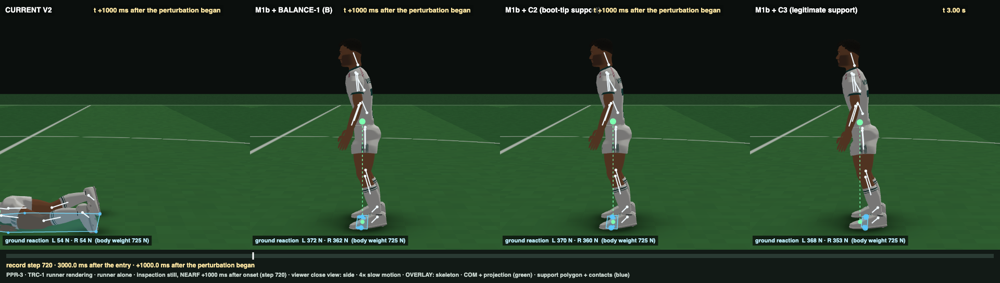
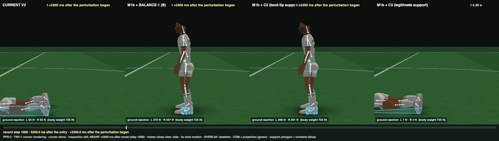
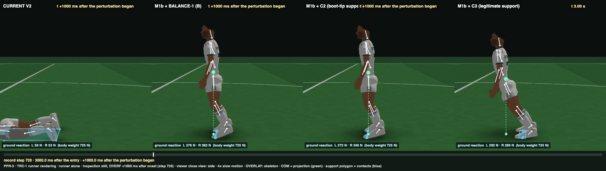

Owner decision (12 Oct, 22:12): rigid boot-tip support is not legitimate. C3 = C2 + a support-envelope governor: the AP command is bounded so that the modelled developed force stays inside C2's own flat-foot envelope (heel edge to the oblique MTP line). No gain, anatomy, stance, foot, criterion or fall-rule change.
Not frozen as the qualified recipient baseline (that needs 17 / 17). The decision is the owner's: articulated toes, stepping, or a band derived at the legitimate edge. PVP was not run.
CURRENT V2 and S2 + old P2: outcome criteria only (n/a = criteria defined on the M1b controllers' channel and law records).
| CURRENT V2 2 / 11 | S2 + old P2 6 / 11 | M1b + BALANCE-1 B 16 / 17 | M1b + BALANCE-2 C2 16 / 17 | M1b + BALANCE-2 C3 15 / 17 | criterion | |
|---|---|---|---|---|---|---|
| U1 | ✗ | ✓ | ✓ | ✓ | ✓ | [D] quiet standing 60 s with motor noise: no fall (COM within 100 mm of entry, pelvis drop < 150 mm), no stop… |
| U2 | n/a | n/a | ✓ | ✓ | ✓ | [D/S] first 250 ms: load steps 1–4 within ±10 % BW, steps 5–60 within ±1 %; penetration and separation ≤ 1 mm; COP within 5 mm of the COM pr… |
| U3 | ✗ | ✓ | ✓ | ✓ | ✓ | [D] no slow fold or creep: last-10-s mean vs 1–2 s mean — key axes ≤ 3°, pelvis ≤ 10 mm, COM ≤ 15 mm… |
| U4 | ✗ | ✓ | ✓ | ✓ | ✓ | [M/E] alive but bounded: COM sway RMS AP within [1.0, 12.9] mm, ML within [0.43, 6.0] mm (human 4.1–4.3 / 1.7–2.0, Foulger 2025, × [0.25, 3]… |
| U5 | n/a | n/a | ✓ | ✓ | ✓ | [S] separation ≤ 5 mm and penetration ≤ 1 mm over 60 s… |
| U6 | n/a | n/a | ✓ | ✓ | ✓ | [M/D] quiet-standing joint-angle SD within [0.1, 0.6]° for both ankles (df), knees (flex), hips (flex) and the neck (flex) (Wang 2014 side-b… |
| P1 | ✗ | ✓ | ✓ | ✓ | ✓ | small pushes (fwd 4.82 / back 5.84 [matched] / lateral 7.5 N·s): recovered without a step (no fall; COM within 10 mm of the twin over the la… |
| P2 | ✗ | ✗ | ✓ | ✓ | ✓ | moderate pushes (fwd 9.64 / back 11.68 [matched] / lateral 15.0 N·s): recovered without a step… |
| P3 | ✓ | ✗ | ✓ | ✓ | ✓ | over-limit pushes (fwd 21.50 / back 26.07 [matched] / lateral 32.5 N·s): loss of no-step balance within 4 s in every direction — a feet-in-p… |
| P4 | ✗ | ✓ | ✓ | ✓ | ✓ | P4′ continuum (corrected): per direction, with levels ordered by impulse — (a) falls are upward-closed; (b) peak COM excursion strictly incr… |
| P5 | n/a | n/a | ✓ | ✓ | ✓ | [causality] every push: commands bit-identical to the undisturbed twin until the disturbance reaches the controller's delayed observations; … |
| P6 | n/a | n/a | ✓ | ✓ | ✓ | [M] tiered latency (literature §19.3.4 / PPR-3 §1g): first neural torque change (developed force × entry capacity, > 0.1 N·m) (a) at ankle /… |
| P7 | n/a | n/a | ✓ | ✓ | ✓ | [M weak] no superhuman corrective-torque rise: both-ankle AP torque max 25-ms slew ≤ 906 N·m/s for small and moderate forward / backward pus… |
| P8 | ✗ | ✗ | ✗ | ✗ | ✗ | [M] human overshoot: for small and moderate pushes in every direction, the COM excursion past the twin opposite to the push after the peak ≤… |
| M1 | ✗ | ✗ | ✓ | ✓ | ✓ | [M/E] Rietdyk-matched pushes: forward 10.58 N·s over 367 ms (88 steps; the thesis A-P pelvis push at its duration-corrected fraction on this… |
| T1 | ✗ | ✗ | ✓ | ✓ | ✗ | [M/E] no-step failure threshold (50 ms pelvis pulse) in every direction: forward within [13.01, 18.22] N·s and backward within [15.77, 22.08… |
| DET | ✓ | ✓ | ✓ | ✓ | ✓ | [S] bit-identical reruns (4 s standing; moderate forward push)… |
Small numbers: fraction of the zero-delay limit at the battery edge (102.95 mm, 26.03 N·s forward) · at the legitimate flat-foot loaded edge (80.3 mm, 20.30 N·s forward). Human "try not to step" range 0.50–0.70.
| CURRENT V2 | S2 + old P2 | M1b + BALANCE-1 B | M1b + BALANCE-2 C2 | M1b + BALANCE-2 C3 | T1′ band | |
|---|---|---|---|---|---|---|
| fwd | 0.14 0.005 · 0.007 | 24.32 0.934 · 1.198 | 14.36 0.552 · 0.708 | 16.64 0.639 · 0.82 | 12.09 0.464 · 0.595 | 13.01–18.22 |
| back | 0.17 0.005 · 0.005 | 20.23 0.641 · 0.641 | 18.19 0.577 · 0.577 | 19.55 0.62 · 0.62 | 20.23 0.641 · 0.641 | 15.77–22.08 |
| left | 0.36 | 20.05 | 25.88 | 25.88 | 25.88 | 21.8–49.8 |
| right | 0.36 | 20.05 | 27.34 | 26.61 | 26.61 | 21.8–49.8 |
L1: boot-tip load share ≤ 0.02 in every run the frozen rule does not score as a fall (U, 16 P, 2 M′, all non-fall threshold levels). L2: no frozen-rule forward fall ends in a feet-in-place physical recovery, and physical forward limit ≤ frozen threshold + 0.7 N·s. Last column: the non-fall forward bisection levels (green = flat sole, red = on the boot tip).
| system | L1 | boot-tip support in recovered runs | L2 | frozen fwd threshold | physical fwd limit | frozen falls physically recovered | non-fall fwd levels |
|---|---|---|---|---|---|---|---|
| M1b + BALANCE-1 B | fail | P.back.limit (tip 0.404, 0.933 s); T.fwd.13.65 (tip 1, 1.008 s); T.fwd.14.22 (tip 1, 0.979 s); T.back.18.02 (tip 0.4357, 1.254 s) | pass | 14.36 | 12.13 | none | 9.1 · 13.65 · 14.22 |
| M1b + BALANCE-2 C2 | fail | P.fwd.limit (tip 1, 0.933 s); T.fwd.13.65 (tip 1, 0.938 s); T.fwd.15.93 (tip 1, 0.912 s); T.fwd.16.5 (tip 1, 0.863 s) | fail | 16.64 | 21.62 | 16.64, 18.22, 20, 21.5 N·s | 9.1 · 13.65 · 15.93 · 16.5 |
| M1b + BALANCE-2 C3 | pass | none | pass | 12.09 | 12.13 | none | 9.1 · 11.38 · 11.95 |
| scenario | BALANCE-1 B | C2 | C3 |
|---|---|---|---|
| small fwd 4.82 | flat sole heel 0° · peak 16.4 mm | flat sole heel 0° · peak 15.4 mm | flat sole heel 0° · peak 15.4 mm |
| fwd 12.0 | boot tip 0.617 s heel 6.53° · peak 69.1 mm | flat sole heel 4.99° · peak 56.1 mm | flat sole heel 1.73° · peak 59.1 mm |
| back 11.69 | flat sole heel 0.01° · peak 36.8 mm | flat sole heel 0° · peak 34 mm | flat sole heel 0° · peak 34 mm |
| left 15.0 | flat sole heel 0.01° · peak 48.3 mm | flat sole heel 0.02° · peak 48.3 mm | flat sole heel 0.02° · peak 48.3 mm |
| near-limit fwd 14.0 | boot tip 0.996 s heel 7.42° · peak 97.1 mm | boot tip 0.929 s heel 7.33° · peak 89.8 mm | falls (1.65 s) heel 82.2° · peak 1374.9 mm |
| over-limit fwd 21.5 | falls (1.59 s) heel 82.33° · peak 1562.1 mm | boot tip 1.554 s heel 16.13° · peak 138.2 mm | falls (1.09 s) heel 82.71° · peak 1394 mm |

14 N·s forward, +1.0 s: B and C2 on their raised boot tips; C3 on its flat sole, going over

+2.2 s: B and C2 standing again (boot-tip saves); C3 has genuinely fallen, feet in place

21.5 N·s, +1.0 s: B and C2 on the tips; C3 falling
12 N·s, +1.6 s: B on its forefoot; C2 and C3 on the flat sole (C3 heel lift ≤ 1.7°)
12 N·s, +0.8 s: near the peak excursion
| push | C2 | C3 |
|---|---|---|
| fwd.small | 0.05 | 0.05 |
| fwd.moderate | 0 | 0 |
| back.small | 0.287 | 0.287 |
| back.moderate | 0.232 | 0.232 |
| left.small | 0.033 | 0.033 |
| left.moderate | 0.023 | 0.023 |
| right.small | 0.04 | 0.04 |
| right.moderate | 0.061 | 0.061 |
The governor is inactive on small pushes, so C3 inherits C2's residual backward offset (C2 design log D8, body-side).
| push | BALANCE-1 B | C2 | C3 |
|---|---|---|---|
| fwd.small | 16.4 mm · settle 0.89 s · os 0.284 · head/thorax 1.73 · knee 0.523° | 15.4 mm · settle 0.98 s · os 0.05 · head/thorax 1.82 · knee 0.574° | 15.4 mm · settle 0.98 s · os 0.05 · head/thorax 1.82 · knee 0.574° |
| fwd.moderate | 33.8 mm · settle 1.01 s · os 0.224 · head/thorax 1.71 · knee 0.969° | 32.8 mm · settle 2.70 s · os 0 · head/thorax 1.85 · knee 1.043° | 33.9 mm · settle 2.70 s · os 0 · head/thorax 1.83 · knee 1.04° |
| back.small | 17.9 mm · settle 1.77 s · os 0.609 · head/thorax 1.92 · knee 0.743° | 16.6 mm · settle 0.95 s · os 0.287 · head/thorax 1.96 · knee 1.24° | 16.6 mm · settle 0.95 s · os 0.287 · head/thorax 1.96 · knee 1.24° |
| back.moderate | 36.8 mm · settle 1.90 s · os 0.49 · head/thorax 1.83 · knee 1.108° | 34 mm · settle 1.46 s · os 0.232 · head/thorax 1.93 · knee 1.88° | 34 mm · settle 1.46 s · os 0.232 · head/thorax 1.93 · knee 1.88° |
| left.moderate | 48.3 mm · settle 2.50 s · os 0.021 · head/thorax 1.88 · knee 2.097° | 48.3 mm · settle 2.52 s · os 0.023 · head/thorax 1.88 · knee 2.048° | 48.3 mm · settle 2.52 s · os 0.023 · head/thorax 1.88 · knee 2.048° |
Quiet stance (60 s): COM RMS AP 1.38 mm (human 4.1–4.3; noise-model-limited, unchanged); C3's quiet run is bit-identical to C2's.
Panels left to right: CURRENT V2 · BALANCE-1 B · C2 · C3. Same recorded step in every panel. Nothing was tuned from the clips.
undisturbed standing from the PPR-3 entry, 0–6 s (each controller with its own motor noise) — normal speed · C3 review: CURRENT V2 | BALANCE-1 B | C2 | C3 · 361 frames
undisturbed standing from the PPR-3 entry, 0–6 s (each controller with its own motor noise) — 0.25× slow motion, steps 480–720 · C3 review: CURRENT V2 | BALANCE-1 B | C2 | C3 · 241 frames
small forward push 4.82 N·s (B2M small) at t = 2 s — normal speed · C3 review: CURRENT V2 | BALANCE-1 B | C2 | C3 · 265 frames
small forward push 4.82 N·s (B2M small) at t = 2 s — 0.25× slow motion, steps 456–696 · C3 review: CURRENT V2 | BALANCE-1 B | C2 | C3 · 241 frames
forward push 12.0 N·s at t = 2 s (the BALANCE-1 moderate push that failed BALANCE-1 P2) — normal speed · C3 review: CURRENT V2 | BALANCE-1 B | C2 | C3 · 265 frames
forward push 12.0 N·s at t = 2 s (the BALANCE-1 moderate push that failed BALANCE-1 P2) — 0.25× slow motion, steps 456–936 · C3 review: CURRENT V2 | BALANCE-1 B | C2 | C3 · 481 frames
matched moderate backward push 11.69 N·s (B2M) at t = 2 s — normal speed · C3 review: CURRENT V2 | BALANCE-1 B | C2 | C3 · 265 frames
matched moderate backward push 11.69 N·s (B2M) at t = 2 s — 0.25× slow motion, steps 456–816 · C3 review: CURRENT V2 | BALANCE-1 B | C2 | C3 · 361 frames
matched moderate lateral (left) push 15.0 N·s (B2M) at t = 2 s — normal speed · C3 review: CURRENT V2 | BALANCE-1 B | C2 | C3 · 265 frames
matched moderate lateral (left) push 15.0 N·s (B2M) at t = 2 s — 0.25× slow motion, steps 456–816 · C3 review: CURRENT V2 | BALANCE-1 B | C2 | C3 · 361 frames
near-limit forward push 14.0 N·s (0.94 × the matched T_fwd) at t = 2 s — normal speed · C3 review: CURRENT V2 | BALANCE-1 B | C2 | C3 · 265 frames
near-limit forward push 14.0 N·s (0.94 × the matched T_fwd) at t = 2 s — 0.25× slow motion, steps 456–936 · C3 review: CURRENT V2 | BALANCE-1 B | C2 | C3 · 481 frames
unrecoverable forward push 21.5 N·s (B2M over-limit) at t = 2 s — normal speed · C3 review: CURRENT V2 | BALANCE-1 B | C2 | C3 · 205 frames
unrecoverable forward push 21.5 N·s (B2M over-limit) at t = 2 s — 0.25× slow motion, steps 456–816 · C3 review: CURRENT V2 | BALANCE-1 B | C2 | C3 · 361 frames
Report: balance2/BALANCE2_C3_REPORT.md · preregistration: balance2/BALANCE2_C3_PREREGISTRATION.md · design log: balance2/c3/C3_DESIGN_LOG.md